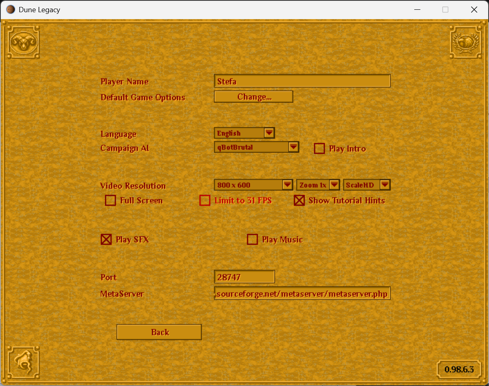

Dune Legacy 0.98.6.3 is now available! This hotfix release addresses critical rocket turret damage issues and improves overall game performance.
What's New in 0.98.6.3
🚀 Rocket Turret Damage Fix (Critical)
- Fixed zero damage bug: Rockets now apply full 30 damage to air units within blast radius (previously scaled to 0)
- Hit rate improvement: 3.5% → 66-100% against ornithopters
- Kill rate improvement: 0% → 66-100% (turrets are finally effective!)
- Proximity fuse: Rockets detonate within half-tile of air targets
- Extended lifespan: 5-second rocket lifetime for better pursuit
⚖️ Ornithopter Balance Adjustment
- Speed increased slightly: 15 → 17 (after fixing targeting issues)
- Still 23% slower than original (22 → 17)
- Remains counterable but viable for harassment
⚡ Performance Improvements
- 60+ FPS support: Game now runs smoothly at higher framerates
- New menu option: "Limit to 31 FPS" for multiplayer stability or low-end systems
- Optimized pathfinding: Reduced budget for better frame pacing

New FPS limit option in Video settings
🤖 QuantBot Behavior Fix
- Fixed: AI no longer attacks with ornithopters on Easy/Medium difficulties (behavior was incorrectly enabled)
- Customizable: Adjust AI behavior in
QuantBot Config.iniin your AppData directory - Unit stats: Modify unit/structure properties in
ObjectData.ini

User-editable QuantBot configuration
📊 Enhanced Logging
- Added detailed performance metrics to
Dune Legacy.log - Combat statistics tracking (targeting, firing, hits, kills)
- Turret behavior logging for debugging
Download Links
- Windows: Dune Legacy 0.98.6.3 Setup.zip
- macOS: DuneLegacy-0.98.6.3-macOS.dmg
As always, you'll need the original Dune 2 PAK files to play. See our FAQ for more information.
Config File Locations:
- Windows:
C:\Users\<username>\AppData\Roaming\dunelegacy\config\ - Linux:
~/.config/dunelegacy/config/ - macOS:
~/Library/Application Support/dunelegacy/config/
Note: This release may have over-nerfed ornithopters slightly - please provide feedback on the balance! The rocket turret fix was critical: previously, distance falloff was rounding damage to zero, making turrets completely ineffective against air units despite firing successfully.
Technical Details: The damage formula for air units was applying exponential falloff based on distance, reducing 30 damage to 0 at the edge of the explosion radius. This has been changed to flat 100% damage within the blast radius for all air targets, making anti-air missiles effective as intended.